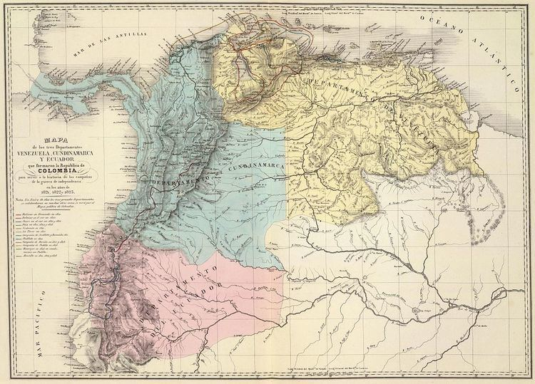
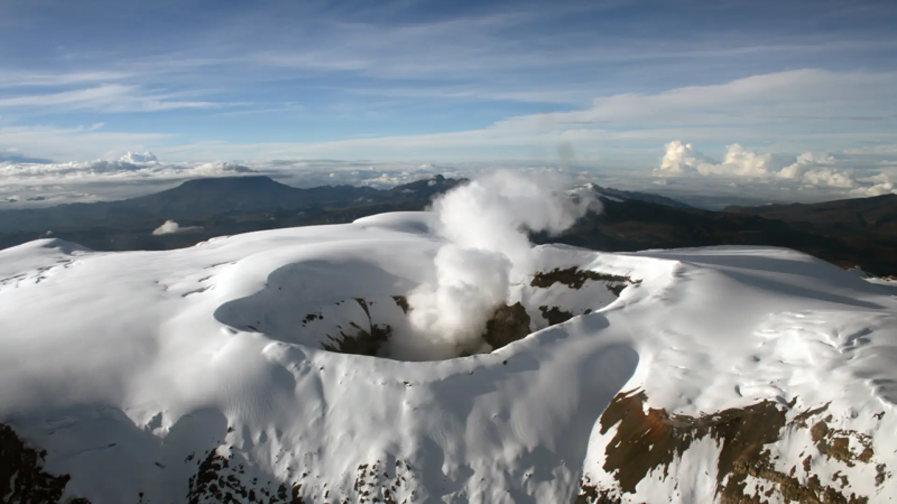
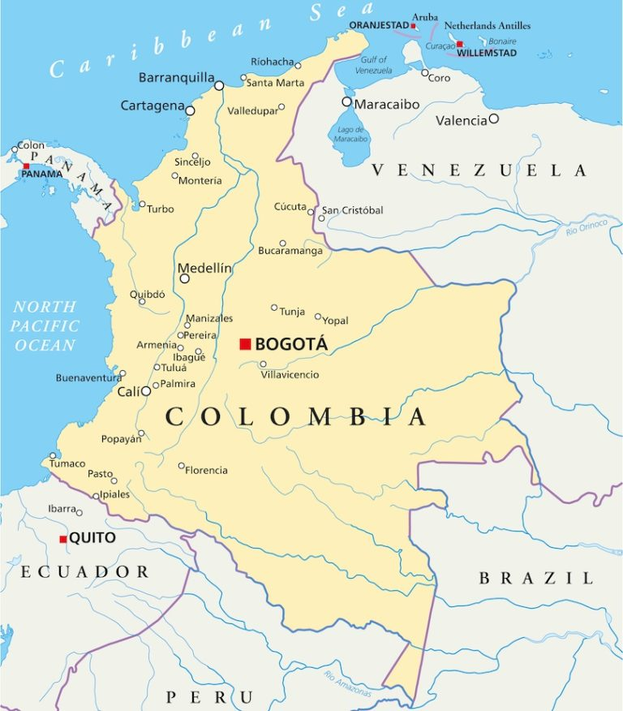
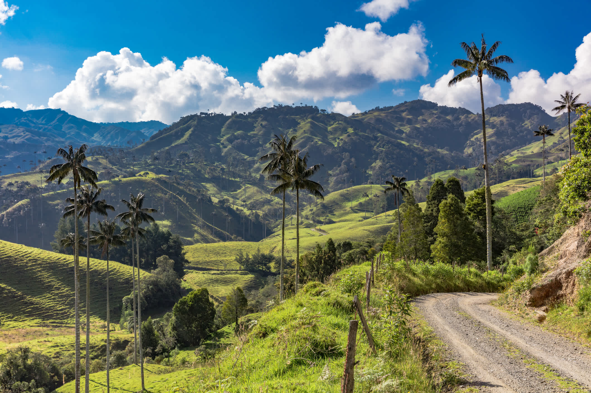
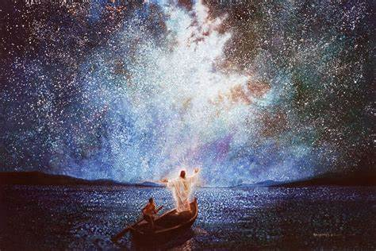

Interactive Maps of Colombia

This ancient map represents Gran Colombia, showing historical territorial claims and borders from the early 1800s.

My Ties to Colombia:
I was born in Colombia, specifically in Bogotá


Interesting Physical Feature:
One fascinating feature of Colombia is the Andes Mountains, which split into three distinct ranges within the country and shape the climate and settlement patterns. Also, Colombia is the only country in South America that has coast in two Oceans The Atlantic and the Pacific Ocean.
Spiritual Reflection:
The beauty and complexity of Colombia's landscapes—its jungles, rivers, and mountains—testify to me of a Supreme Creator, as Alma 30:44 teaches. Nature’s harmony reveals divine purpose.
